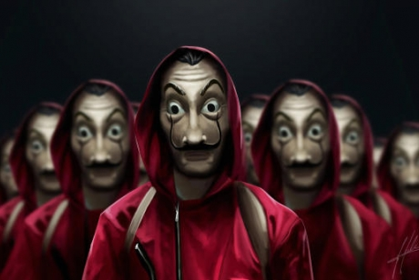

La casa de papel

Money Heist (Spanish: La casa de papel, transl. The House of Paper) is a Spanish television heist crime drama series.
Created by Álex Pina, the series was initially intended as a limited series to be told in two parts.
Best Quotes from the series
- "There are moments in life we should just be able to have a damn remote control, so you could pause it. ..."
- "Dear, in the end, love is what makes us see life in another color, and lately, you have only seen everything black - Mother of Raquel"
back to home page